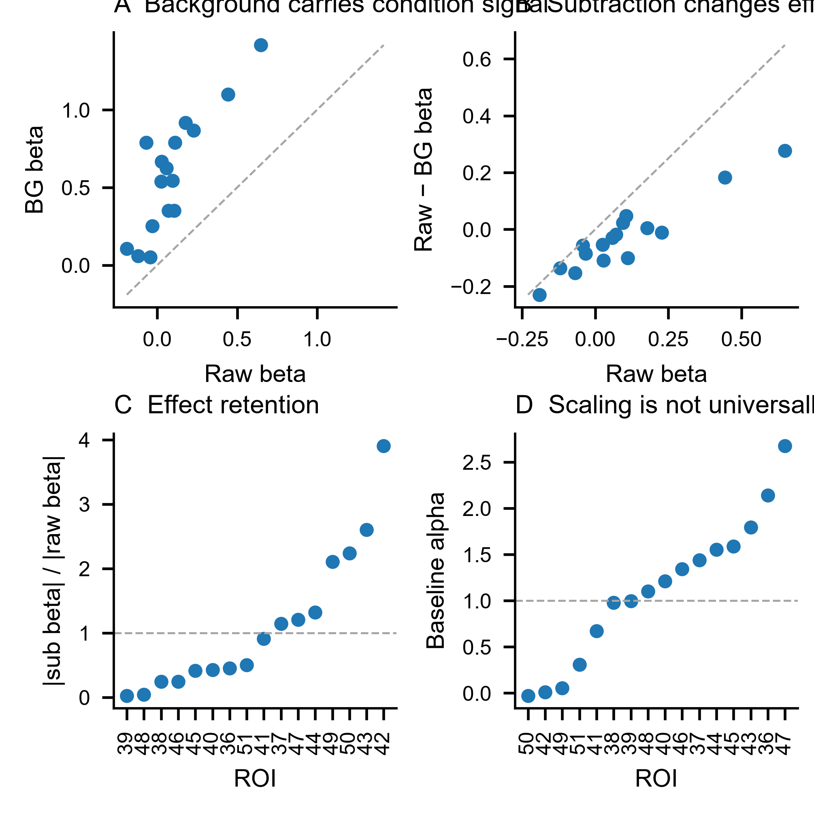
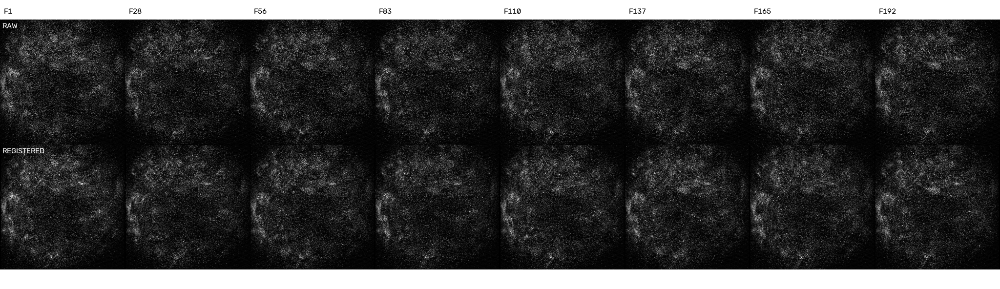

Signal subtraction and frame-level registration audit
This audit was triggered by the observation that the local background trace itself has high SNR. The central question is whether the historical ROI − background rule removes nuisance fluorescence or removes real event/condition-locked neural signal together with it.
sub1 = raw − 1×background as a uniquely validated biological authority. It remains a useful sensitivity view, but D6 shows direct evidence that the background channel contains structured condition signal and that unit subtraction materially changes individual-cell effects.1 · What the historical subtraction actually does
The checkpoint was verified numerically: sub = raw − bg exactly (maximum absolute difference 0). There is no fitted gain in the frozen sub1 trace. The historical mask code defines background as a 20-pixel disk around the ROI centroid, with detected somata excluded after a small dilation. It is therefore local neuropil/background, not a remote blank-field estimate.

2 · D6: subtraction materially changes condition effects
Three cells with a nominally significant raw condition effect lose that significance after unit subtraction. Across all 16 cells, the median |sub β| / |raw β| is 0.705. Raw and sub cell effects remain correlated overall (r=0.941), so the whole population is not destroyed, but individual cells are changed strongly enough that a single fixed subtraction should not be the only analysis.

ROI40 illustrates the problem directly: raw β=0.649; background β=1.417; raw−bg β=0.277. In the α sweep, the condition effect decreases monotonically from 0.649 at α=0 to 0.395 at α=0.7, 0.277 at α=1.0, and 0.197 at α=1.2.
An even more aggressive background-covariate residualization is not a solution: the original fixed-subtraction sustained cell-axis split-half correlation is 0.436, whereas the background-residualized version falls to −0.152 (whole window −0.171). That loss of cross-trial reliability argues against simply removing more of the background channel.
16-cell audit CSVROI40 α sweep CSVmask geometry CSV
3 · Registration is now checked frame by frame, not only by a mean image
D6 trial 1, plane S3 contains 192 real 512×512 frames before and after registration. The same frames were extracted into a side-by-side movie. Against a common registered-median template, median high-pass frame correlation increases from 0.0446 → 0.1725. The raw stack has P95 estimated displacement of 3.30 px; the registered stack is centered at the template shift solution for essentially all ordinary frames.


Frame metrics CSVOpen MP4 directly